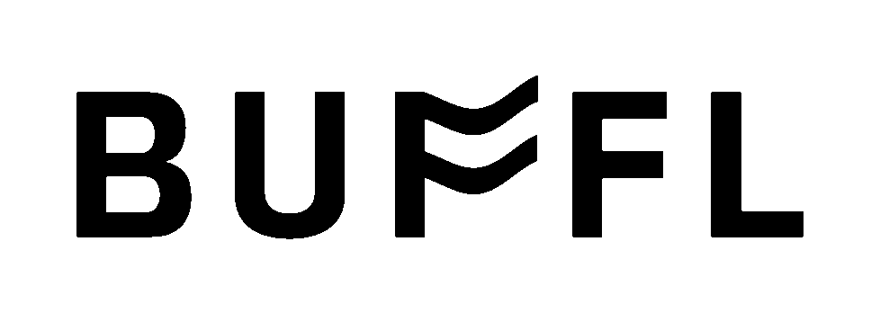
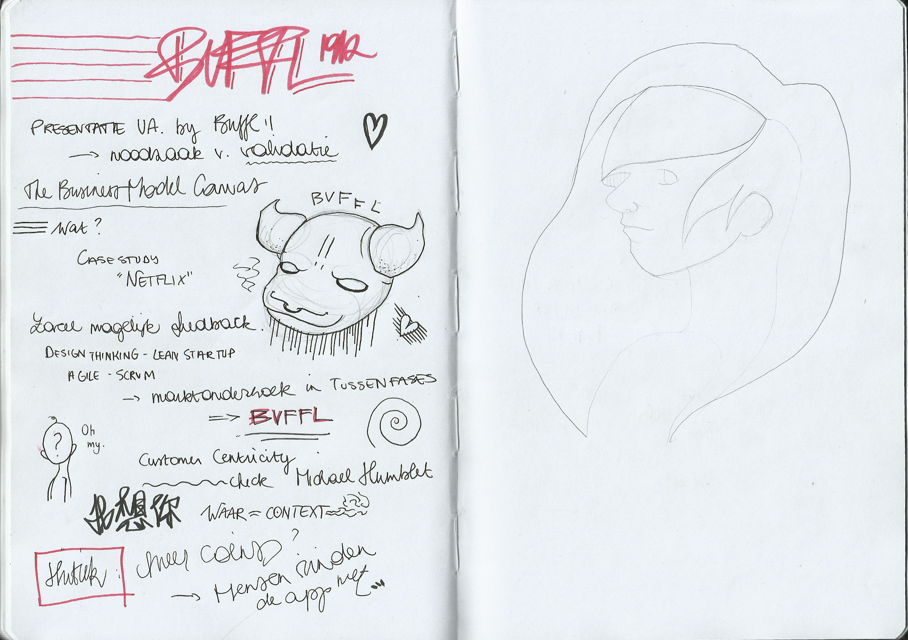
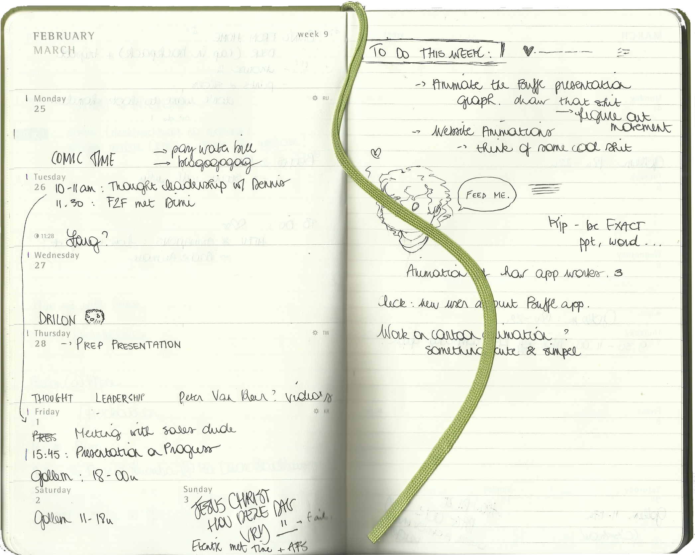

Jentl loopt stage.
verslag van een multimedia studente
Over Jentl
De Blog
Mijn Portfolio
18 februari 2018
Mijn eerste dag op mijn stageplek verliep waarschijnlijk zoals eerste dagen op stageplekken doorgaans verlopen. Met veel rondkijken, verloren lopen in het kantoorgebouw, niet goed weten wat doen of wie je nu exact moet lastig vallen om te weten wat je moet doen, en dergelijke.
Maar het was ook de dag van de eerste meeting, en meteen de bevestiging dat ik met goede reden ervoor gekozen heb om in een kleine start-up mijn stage te doen. Er was ruimte voor een lach en een babbel, iemand voorzag ontbijt omdat hij vorige week zijn deadlines niet gehaald had, anderen waren opgelucht dat ze geen pannenkoeken zouden moeten bakken omdat ze de hunne wél gehaald hadden, en het gemoed lag, voor een maandagochtend, zeer hoog.
De prioriteiten van de dag lagen erin gekend te geraken met de tools die het team gebruikt om te plannen en communiceren, en met BUFFL zelf. Veel ervan had te maken met UX en back-end development, zaken waar ik mijn weg (nog) niet goed in ken, maar die me als multimedia student wel interesseren. Het was de herkenbare chaos van ergens nieuw beginnen; een overrompeling aan nieuwe informatie en mini-paniekaanvallen bij het zien van de waterval aan folders op de gemeenschappelijke drive.
Maar na de middag kwam de eerste opdracht, en mijn eerste houvast: een simpele animatie van hun logo voor het laadscherm van de app en dergelijke.
Zoals herkenbaar is voor eender welk project in After Effects doe je de eerste 90% op tien minuten, en spendeer je dan twee uur met het zoeken naar redenen waarom de overige 10% niet doet wat het hoort te doen.
Maar, de aanhouder wint, en nu weet ik exact hoe een sinusgolf te manipuleren om een mooie ‘vlag’-animatie te maken zoals hieronder. Nu nog de dertigduizend codecs trotseren om er een te vinden die wél alpha kanalen ondersteunt, maar niet de omvang heeft van een kleine Afrikaanse natie.
For future reference, toekomstige projecten die het delen waard zijn zullen onder de tab ‘Portfolio’ terug te vinden zijn.
20 februari 2018
Vandaag bevonden mijn mede-stagiair en ik ons in de stoeltjes van de stadscampus van de Universiteit Antwerpen. Waarom? Om een lezing bij te wonen van een van onze BUFFL collega’s, die de studenten kwam vertellen over marktonderzoek, en er tussendoor goed wat reclame voor BUFFL tussensmeet. Win-win voor iedereen.
Mijn ordelijk notitiesnemen is wel nog steeds een werkpunt.
’s Ochtends was voor me echter een lang en ergerlijk geknoei met codecs en vijf verschillende programma’s om uiteindelijk dan toch te eindigen met een transparante, smoothly looping GIF. Maar hiphoi, de aanhouder wint, en met een mooie grootte van zo’n dertig megabyte (wetende dat ik van een whopping 1,92 gigabyte kwam) heeft BUFFL nu eindelijk een animatie voor hun laadscherm.
Ik hoop dat ze volgende week niet van logo veranderen.
23 februari 2018
Er worden plannen gemaakt. Ho ho. Plannen. Aanschouw, de volheid van mijn agenda.
Projecten beginnen stilaan vorm te krijgen. Het is niet meer proberen mijn uren op kantoor gevuld te krijgen, maar ze op zo’n wijze proberen in te passen dat alle deadlines worden gehaald met ruimte voor feedback and foutcorrecties. Voorlopig is het nog niet overweldigend. Alles blijft overzichtelijk en concreet, en hoewel de doelstellingen uitdagend zijn zijn ze tegelijkertijd haalbaar.
Afgelopen donderdag werden ik en Lom, de mede-stagiair, meegenomen naar het Wagenoord in Mechelen, waar op dat moment een hackathon event plaatsvond georganizeerd door The Forge, en waar Buffl mee een hand in had. Het doel was dat de aanwezige Thomas Moore studenten projecten in elkaar staken om het huidige pakjesafleversysteem in Mechelen te verbeteren. Deze projecten moesten binnen een span van 48 uur uitgewerkt en gepitchd worden, en daarvoor waren wij ter plaatse.
Onze stagebegeleider van Buffl maakte snelle productschetsen van hun ideeën, Lom nam de pitchen op en bezorgde mij de audiotracks, en ik goot dat alles in een filmpje, samen met een snel geanimeerde intro en outro. En dat voor twaalf verschillende groepen. Op enkele uren tijd.
Het was de eerste keer dat ik zo tegen een deadline moest werken, en dit, komende van een student, kan al wat betekenen. Alles moest snel gaan, geen tijd voor pauzes. Er moest snel een efficiente oplossing gevonden worden voor het probleem, en dan uitgevoerd worden. Het was hectisch. Het was chaos. Het was een van de leukste dingen die ik ooit al gedaan heb. Doorwerken tot middernacht en dan de volgende ochtend vroeg uit de veren om verder te werken en alles af te ronden.
1 maart 2018
Toen ik voor de specialisatierichting Audio Video koos was ik, zoals menige mensen in die richting, opgelucht dat dit zou inhouden dat het programmeren en coderen tot een minimum zou gehouden worden, of toch zeker in contrast met de zware lading programmeertalen binnen de andere afstudeerrichtingen die zich focussen op web design of game development.
Enter After Effects expressions.
Ze zijn er om je leven gemakkelijker te maken dat is zo. In plaats van met expliciete keyframes te werken kan je expressions gebruiken binnen After Effects om zo de animaties te manipuleren. De wiggle() expression bijvoorbeeld zorgt ervoor dat de waarden van een bepaalde property van een bepaalde laag constant en willekeurig veranderen. Zo kan je een object constant laten heen en weer wentelen door de wiggle() toe te passen op de rotation property. Boom. Bespaart je de uren die het je zouden gekost hebben om al die willekeurige wenteling manueel te keyframen.
Maar expressions blijven code. En samen met code komt de constante ‘oh-god-oh-god-why-is-it-doing-that’ vrees. Neem het onderstaand blokje bijvoorbeeld.
x = thisComp.layer("Null 1").effect("Slider Control")("Slider");
temp = linear(x,0,500,0,30);
[temp, temp, temp]

Vrij voor de hand liggend stukje code, but code nonetheless.
En vanaf er code in je project komt gaan dingen zich niet altijd gedragen zoals je verwacht. Lagen die in het rond beginnen springen of helemaal verdwijnen, of die om de een of andere reden dan toch gekeyframed zijn om van positie te veranderen.
Volgen we dan de eeuwenoude (behalve niet echt) leuze van After Effects: doe tien minuten efficiënt werk, en spendeer dan de komende uren om een fout te corrigiëren waarvan je de oorsprong niet vindt.
5 maart 2018
Waarom expressions dus wel degelijk zijn nu hebben. Het onderstaande 'particle effect' zou eindeloos veel werk zijn om manueel te maken, tot het onmogelijke toe.